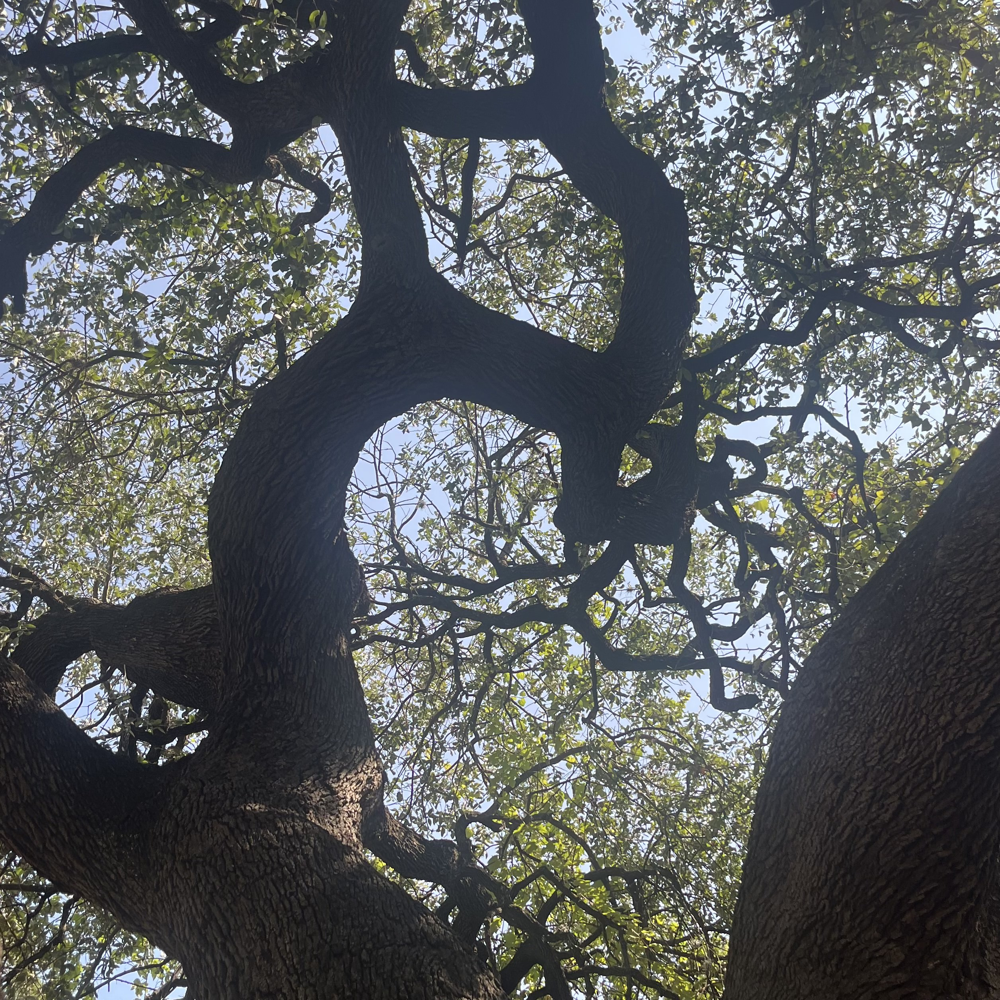

NATIVE TEXAS PLANT | EVERGREEN
As you may have noticed, the southern live oak has a beautiful canopy with sprawling branches. This canopy is made possible by the tree's root system, which is especially integral to its growth. Oaks generally have some of the most sensitive roots, so cutting or damaging them could cause thinning to its canopy and impact its overall health.